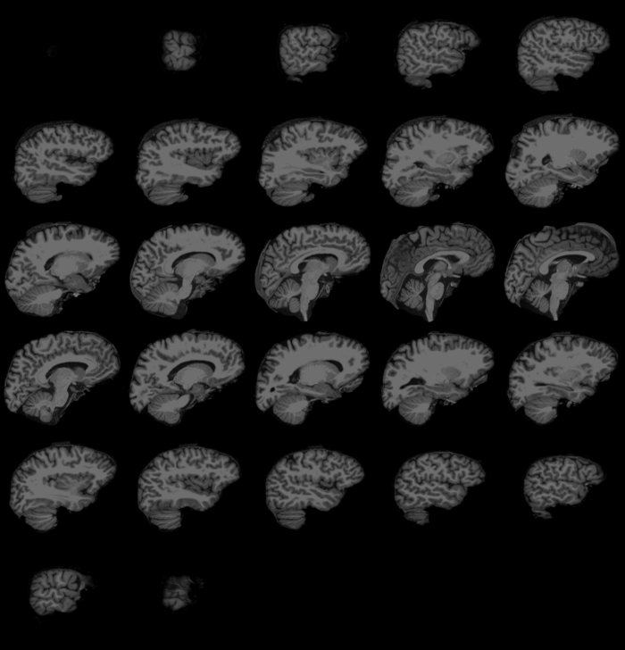
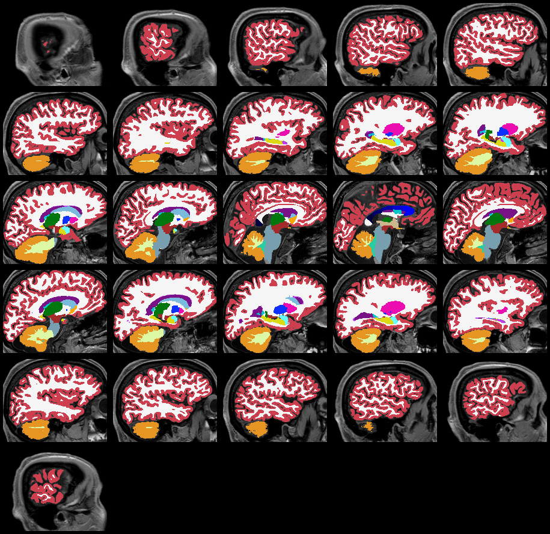

In this document, we demonstrate some high-level functions for loading and visualizing brain volume data. While this package has been developed with FreeSurfer in mind, many of the visualization functions work with 3D matrices and do not make any assumptions on where the data comes from.
Please note that the volume visualization functions presented here are a very recent addition to fsbrain, and that they are still in a very early development stage. I am very grateful for any bug reports or comments, please see the project website.
Example data used in this document
We will use example data that comes with fsbrain throughout this manual. Feel free to replace the subjects_dir, subjects_list and subject_id with data from your study.
library("fsbrain");
fsbrain::download_optional_data();
subjects_dir = fsbrain::get_optional_data_filepath("subjects_dir");
subject_id = 'subject1'; # for function which use one subject onlyLoading volume data
If all you want is the raw voxel data, you could load a FreeSurfer volume in MGH or MGZ format like this:
brain_data = subject.volume(subjects_dir, subject_id, "brain");In many cases, you will need the header information as well, e.g., to be able to compute RAS coordinates for the voxels. If that’s the case, load the volume with header:
brain = subject.volume(subjects_dir, subject_id, "brain", with_header = TRUE);
brain_data = brain$data;Volume visualization
A brain volume file contains one or more three-dimensional (3D) single channel (grayscale) images, typically encoded as integer arrays representing intensity values at each voxel. A 3D image is sometimes called a z-stack of 2D-images, or more general as a collection of 2D image slices. The fsbrain library offers two different ways to view 3D images: a lightbox mode, which shows a grid of several 2D slices, and a true 3D view that renders voxels or meshes computed from them.
An important thing to keep in mind when visualizing volume data is the range of your intensity values. They may be in range 0-255, 0-65535, or 0-1. Most visualization functions expect input values to be normalized to the range 0-1, so you may need to perform a normalization step (see the examples below).
Basic Lightbox view for raw MRI data
Here is an example that loads a brain volume, computes a bounding box, and visualizes some slices along the first axis in lightbox view:
brain = subject.volume(subjects_dir, subject_id, 'brain') / 255;
bounded_brain = vol.boundary.box(brain, apply=TRUE);
volvis.lightbox(bounded_brain);The bounding box serves to remove background at the borders of the image tiles and is optional. See the help for vol.boundary.box for details on how to control it.

Have a look at optional arguments to the functions to see how to modify the threshold used when computing the bounding box, how to define which slices are displayed, and how to change the slice axis.
Notice that we scaled the raw data by 255 in this example, as the volume file contains values in the theoretical range 0-255. If none of the voxels actually reaches the max value of 255, you could scale by the actual max value for improved visual contrast.
Advanced lightbox view
The new volvis.lb function is a convenient wrapper around volvis.lightbox and should be preferred over the latter. It is especially convenient for displaying statistical results with a colormap, and optionally with a background for orientation within the brain anatomy.
Please have a look at the help and examples for volvis.lb until this vignette has been updated, it’s worth it.
Here are some example commands for visualization of continuous data
images (raw MRI scans, statistical results, etc). They assume that your
subjects_dir is ~/data/study1 and that your
subject_id is subject1.
volvis.lb("~/data/study1/subject1/mri/brain.mgz");
volvis.lb("~/data/study1/subject1/mri/brain.mgz", bbox_threshold = 1L);
volvis.lb("~/data/study1/subject1/mri/brain.mgz", background = "~/data/study1/subject1/mri/T1.mgz");
volvis.lb("~/data/study1/subject1/mri/brain.mgz", background = "#FEFEFE", background_color="#FEFEFE");You can also pass a pre-loaded volume instead of a file name, of course:
volume = subject.volume(subjects_dir, subject_id, 'brain');
background = subject.volume(subjects_dir, subject_id, 'T1'); # if you have this file.
volvis.lb(volume);
volvis.lb(volume, background = background);And here are some example commands that illustrate how to visualize a segmentation using a color lookup table (LUT):
ct = file.path(find.freesurferhome(mustWork = T), "FreeSurferColorLUT.txt"); # ct = "color table"
volvis.lb("~/data/study1/subject1/mri/aseg.mgz", background = "~/data/study1/subject1/mri/T1.mgz", colortable = ct, colFn=NULL, axis=2L);
volvis.lb("~/data/study1/subject1/mri/aseg.mgz", background = "~/data/study1/subject1/mri/T1.mgz", colortable = ct, colFn=NULL, axis=1L, bbox_threshold = 0);The function volvis.lb can also be used to easily visualize segmentations with a color lookup table (instead of a colormap function, which makes limited sense for categorical data).

Raw 3D voxel visualization
This is a toy example that gives you a feeling for the voxel size in
an MRI scan. It is most suitable for interactive use and no screenshot
is shown in this vignette. These voxel visualizations rely on a binary
definition of foreground voxels (which are rendered) versus
background voxels (which are not rendered) to show the contents
of a 3D image. For most grayscale images, especially pre-processed ones,
simple thresholding is enough to identify the foreground. Set the
background to NA before rendering. In the following
example, we load a brain volume with intensity values in range 0-255,
and set the voxels with intensity values in range 0-5 as background.
Notice: If you do not set anything to background after loading a volume, it may take a long time to render the image and the result will be a single large block.
brain = subject.volume(subjects_dir, subject_id, 'brain');
threshold = 5L;
brain[which(brain <= threshold, arr.ind = TRUE)] = NA; # mark background
brain = vol.hull(brain, thickness = 2L); # Remove inner triangles for performance, optional.
volvis.voxels(brain);